Things to Do in Dublin - A 3-day Weekend Itinerary

There are an incredible array of things to do in Dublin, so if you are visiting for a short weekend, it can be a bit overwhelming to figure out how to best make use of your time. I recently had the good fortune of spending a week in Dublin. While there, I visited a lot of places, some were undeniably incredible, while others I could have lived without.
In this article, I highlight the very best from my time in Dublin and schedule it out for you in an easy to follow guide which can serve as an outline for things to do in Dublin as you plan your trip there. Should you have feedback, additions, or questions, please leave a comment at the end of this article so that I and others can help you have the best trip to Dublin ever!
Outline of Things to Do in Dublin
- Day 1 - Royalty and whiskey
-
Dublin Castle (1.5 hours)
-
Shopping in the old town (open-ended)
-
Selfies with Statues (open-ended)
-
Ha’penny Bridge (10 minutes)
-
Jameson Distillery on Bow St. (2 hours)
-
The Church Bar (open-ended)
-
-
Day 2 - A historic walk and a brewery tour
-
The Samuel Beckett Bridge (10 minutes)
-
St. Stephen’s Green (30 minutes)
-
Book of Kells + Trinity College (1 hour)
-
St. Patrick’s Cathedral (1 hour)
-
Get your family crest (5 minutes)
-
Guinness Storehouse (3-4 hours)
-
Temple Bar (open-ended)
-
Temple Bar whiskey tasting (optional)
-
-
Day 3 - A hike along the coast
-
DART train to Greystones + Cliff Walk (3-4 hours)
-
DART train to Howth for Fish and Chips (1-2 hours)
-
Mix and match this schedule to suit your needs and weather conditions.
Getting the Most out of Dublin
There are shared bikes all across Dublin and you can get a 3-day pass for just €5 and use the bikes an unlimited number of times for up to 30-minutes each ride. Public transportation in Dublin will cost you more and be less convenient in most cases, but if you anticipate bad weather just keep some coins in your pocket for the bus as they don’t accept paper cash or cards, and they don’t give change. I also wouldn’t advise riding without a ticket, as the fine for getting caught can be as high as €1,000. Uber is also available throughout Dublin.
That said, in the week I spent in Dublin, I never took the bus and I only took an Uber to the airport. Dublin is very walkable. Taking your own two feet is also the best way to explore the city. However, for a short weekend trip, you should probably take a bike, bus, or Uber to at least a few of the further out places, such as the Guinness Storehouse and the Jameson Distillery. I only say this as a timesaver and not because you couldn’t walk it if you wanted to. So consult Google Maps and make the decision that is best for your schedule.
And last but not least, be aware that Ireland’s currency is the Euro and you will need an adaptor for a type-G electrical plug at 230v and 50Hz. I recommend this adaptor on Amazon. (affiliate link)
Now, let’s get on with discussing all the things to do in Dublin for your awesome weekend trip!
Day 1 - Royalty and Whiskey
Let’s take it a little bit easy on the first day. There are so many things to do in Dublin, but you just landed and you’ve not yet gotten acquainted with the city. There are a lot of things to stop and admire along the way and so this first day balances a set to-do list and the flexibility to just explore as you go. Today you will get your bearings and walk through many of the central hotspots.
I recommend kicking off the day with breakfast wherever is near you. The “full Irish breakfast” is the go-to. Plus, you will get to try “black pudding,” a typical item on the Irish breakfast plate. You probably don’t want to know what it is. Just eat it and smile.
After that, head to the Dublin Castle around opening time. From there, enjoy Dublin’s shopping district. Then we will go learn some about the modern history of Dublin at the Jameson Distillery and taste some Irish whiskeys. To close the day out, grab a beer at one of the most interesting bars in the world.
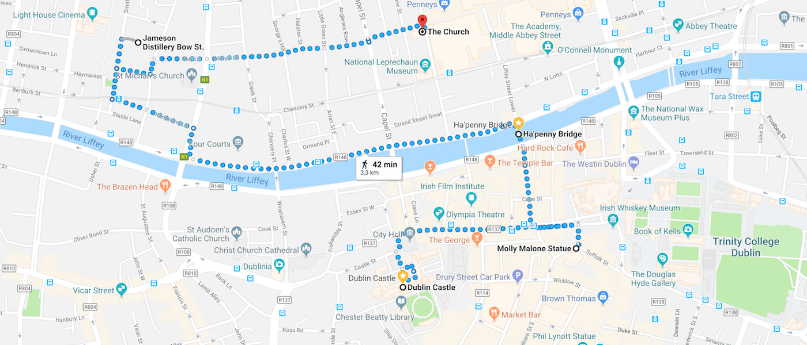 (https://goo.gl/maps/k7hetkFAABJ2) Click on image to open interactive map on Google.” %}
Dublin Castle
Dublin Castle is among the best things to do in Dublin, so what better place to start? The castle as you see it today is relatively new, built in the last 200 years, but there has been a government building here for around 900 years. This was the seat of English, and later, British, government in Ireland until Ireland won independence in 1922. It is an active government building today, used mostly for formal state dinners and inauguration of the presidents of Ireland.
There are self-guided and guided tours available of Dublin Castle. Much of the open exhibits allow for free-range exploration of the various rooms of state and apartments in the castle. There are rotating exhibit spaces as well which display some of Ireland’s finest artifacts. When I was visiting, the ceremonial Irish Sword of State was on display. This sword has been the symbol of Irish rule since 1681 and is officially part of the British Crown Jewels. It is on loan to the Dublin Castle from its normal display at the Tower of London.
-
When to visit: Early morning or after lunch
-
Time to Budget: 1.5 hours
-
Official Website: dublincastle.ie

Portrait of King George IV at the Dublin Castle

The State Corridor at the Dublin Castle
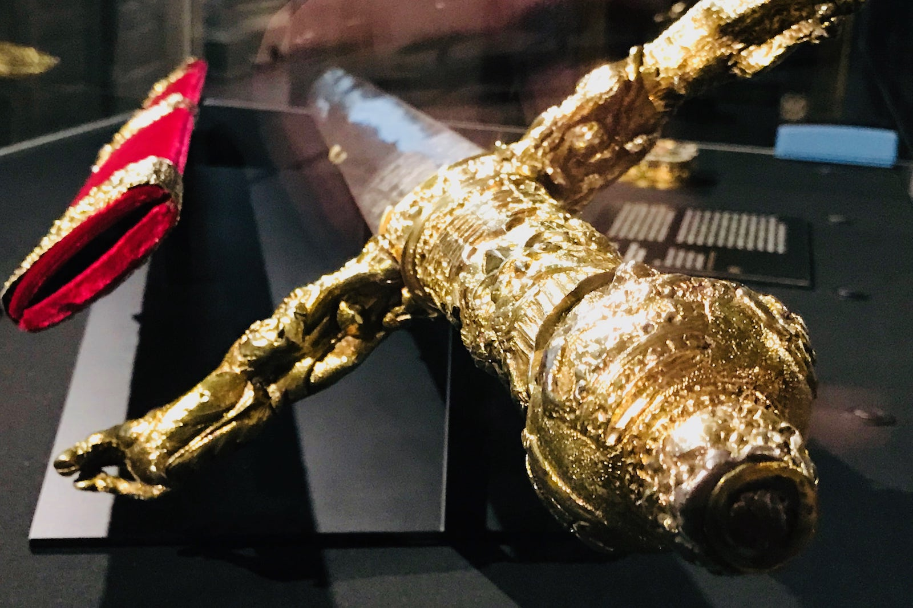 The Irish Sword of State on Display at the Dublin Castle
back to top
Shopping in the old town
The shopping in Dublin is very good. Find Ha’penny Bridge on the map. The area south of the bridge is more historic old-town and higher-end shops. the area directly north of Ha’penny Bridge is a bit more bohemian and crafty.
I found a lot of really cool shops in Dublin, but here are a few places I think everyone should check out:
The Secret Book and Record Store 15 Wicklow St, Dublin 2, D02 C924, Ireland Cosy, independent bookshop offering a wide selection of new & secondhand titles, plus CDs & vinyl. Website
Aran Sweater Market 115 Grafton Street, Dublin 2, Ireland The home of the famous Aran sweater, and original of Ireland! Sweaters, scarfs, and all sorts of other wool products. Website
George’s Street Arcade S Great George’s St, Dublin 2, Dublin, Ireland Ornate 1881 shopping plaza offering indie clothing boutiques & food vendors, plus books & jewelry. Website
If you are interested in secondhand and vintage shops, then you must check out Siopaella. There are four locations in Dublin, all very near each other. Each location has a different specialty, ranging from furnishings and luxury goods to more vintage items.
-
When to visit: 9:30 am - 7:00 pm 7-days a week (normal opening times)
-
Time to Budget: Open-ended
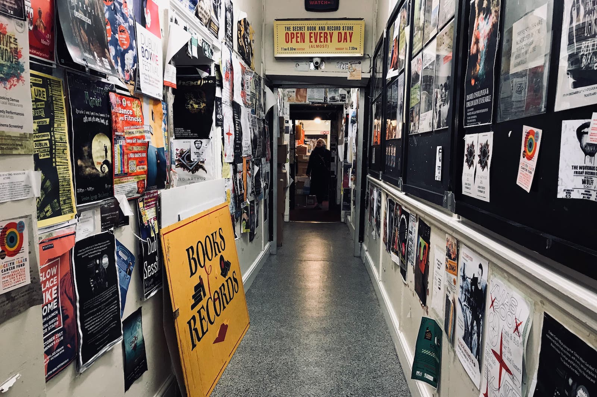 The Secret Book and Record Shop in Dublin Ireland
back to top
Selfies with Statues
There are statues and monuments everywhere in Dublin. Playing a history-based Pokémon-like game to try and find them all will keep you quite busy and is a fun activity to play between all the other things to do in Dublin. Just keep your eyes open and snap a selfie every time you see a statue. If you do this, I promise you will have a really interesting compilation of photos across Dublin.
There are too many statues for me to list or show, but pictured here is perhaps the most famous statue. This is of Molly Malone, a legendary character of the 17th century. It is unknown if Molly was a real person or not, but still, her life is forever memorialized in a famous Irish folk song, and now in this statue.
-
When to visit: Daylight hours
-
Wikipedia: List of Public Art in Dublin
 Statue of Molly Malone in Dublin
Statue of Molly Malone in Dublin
back to top
Ha’penny Bridge
The River Liffey bisects Dublin into northern and southern halves. There are more than a dozen bridges in just the central area of Dublin and so you shouldn’t ever feel too trapped on one side, without an easy route across.
The cast iron Ha’penny Bridge, dubbed as such because it was originally a toll bridge requiring pedestrians to pay in ha’pennies to cross it, is Dublin’s most historic bridge. Over 200 years old, it was built in 1816 as Dublin’s first pedestrian bridge. It would remain the only pedestrian bridge until the nearby Millennium Bridge was opened in 1999.
-
When to visit: Anytime
-
Time to Budget: Minutes
The historic Ha’penny Bridge in Dublin
back to top
Jameson Distillery on Bow St.
Ireland is home to whiskey and no other whiskey in the world is as well-known as Jameson. The Bow St. Distillery in central Dublin is the historic home of Dublin, but it is no longer an active distillery. However, this does not make the experience any less exciting. The distillery “tour” is called The Bow St. Experience because it is a multimedia 4-D immersion into the world of Jameson, whiskey, and Ireland (the 4th dimension is tasting whiskey!)
I wrote a comprehensive review of the Jameson Distillery which you should read if you plan to visit the Bow St. Distillery. Regardless of how you feel about whiskey, I can’t stress enough that this is more or less mandatory on the list of things to do in Dublin.
-
When to visit: Mid- or late-afternoon
-
Time to Budget: 2 hours
-
Official Website: jamesonwhiskey.com
-
Additional reading: Jameson distillery tour and whiskey tasting experience
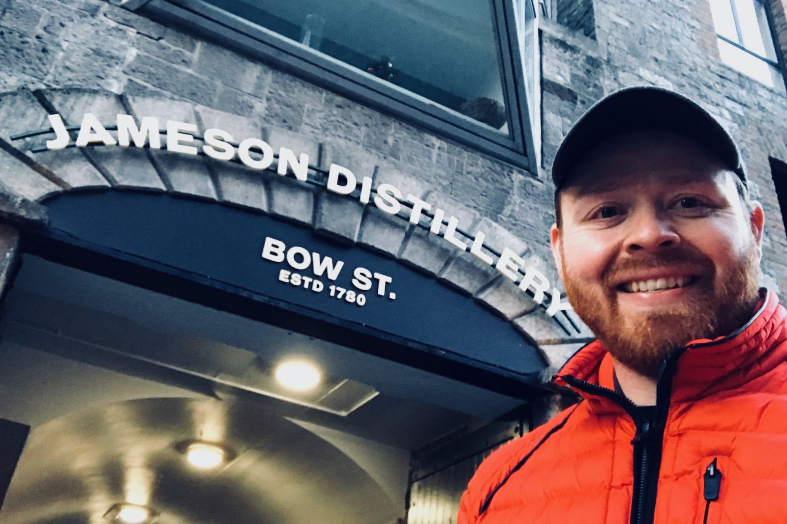 The Jameson Distillery on Bow St. in Dublin
back to top
The Church Bar
With so many cool things to do in Dublin and so many eclectic pubs, it is difficult to pin down “the best” place to grab a pint. But for sure, it is not every day that you can enjoy a drink inside of a church!
The Church is a bar, restaurant, and event venue brought to life from the neglected ruins of St. Mary’s Church which had been left empty for over 30 years. The refurbished space has kept the stained-glass windows and organ pipes in-place and relishes in the grand church architecture as the perfect place to let go of your sins for a night!
And yes, you can get married here, too!
-
When to visit: Evening
-
Official Website: thechurch.ie
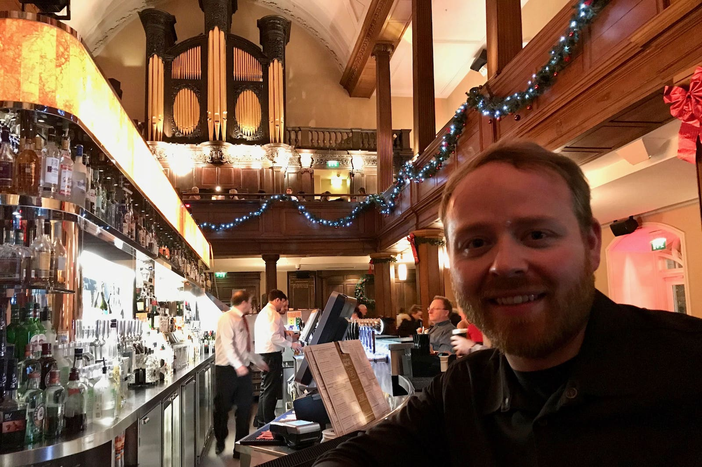 The Church Bar in Dublin Ireland
back to top
Day 2 – A historic walk and a brewery tour
Let’s get out and stretch out legs! There are so many things to do in Dublin and we don’t have any time to spare! Be ready for an intense day of site-seeing, monument-gawking, and alcohol appreciation!
We will move in a westwardly direction for most of the day. Starting at another of Dublin’s iconic bridges, catching the sunset from atop the Guinness Storehouse, and then ending at the most iconic bar in all of Ireland to sing our hearts out until sunrise.
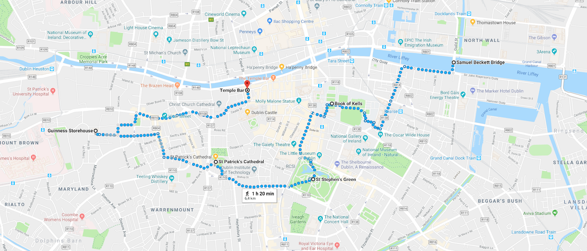 (https://goo.gl/maps/bKZP6fQF6ZU2) Click on image to open interactive map on Google.” %}
The Samuel Beckett Bridge
Whereas the Ha’penny Bridge, which we saw yesterday, is one of the oldest bridges in Dublin, The Samuel Beckett Bridge is one of the newest bridges in Dublin. The architecture, however, is still what makes this a bridge worth checking out. The suspension cables and their mainstay form the shape of a harp, which is the national symbol of Ireland since the thirteenth century. If you can catch the bridge on a calm day, the water of the Liffey River casts the neatest reflection. You can almost see that in the picture below.
Pro tip: there is a Starbucks right around the corner from here, as well as the Admiral William Brown Memorial (another statue selfie!)
-
When to visit: Anytime
-
Time to Budget: Minutes
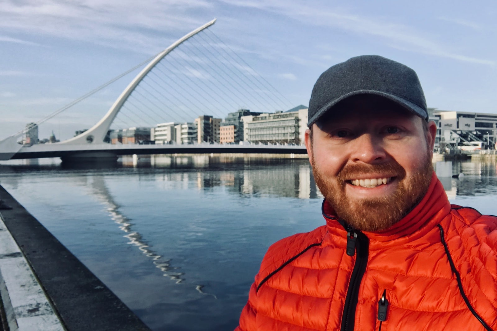 The Samuel Beckett Bridge in Dublin is the shape of the Harp, Ireland’s national symbol
back to top
St. Stephen’s Green
This beautiful park in the heart of central Dublin is a great place to relax. Complete with botanical gardens, fountains, meticulous landscaping, and even a waterfall, a visit to St. Stephen’s Green is among the more relaxing things to do in Dublin. As you can see, I visited in the dead of winter, yet despite that, the park was full of life and still a beautiful place to hang out.
-
When to visit: Daylight hours
-
Time to Budget: 30 minutes
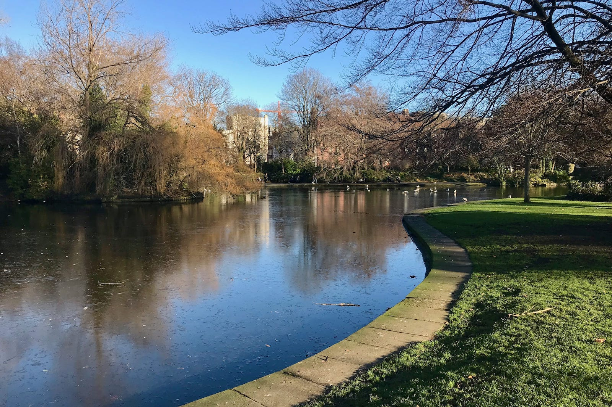 St. Stephen’s Green in central Dublin
back to top
Book of Kells + Trinity College
The Book of Kells is actually four books containing the Gospels of the New Testament. They were created around 800 A.D. in either Britain or Ireland and are famous for their richly adorned pages with intricate drawings depicting the characters of the Gospels. They have been on display at Trinity College since 1661. Only two volumes are on display at any given time and the page which the on-display books are open to changes fairly regularly as well so as not to cause damage to the books.
When you enter into the Old Library of Trinity College, you will have to pay for a ticket to see the Book of Kells. First, you are guided through a very well-organized exhibit detailing the history of the books. The larger-than-life prints from the book which are on display here, are honestly the best view you will get of the books. After the exhibit, you go to a room where the books are and you can cast your gaze upon them for as long as you feel comfortable blocking someone else’s view.
The Long Room of the Old Library
Departing from the room with the Book of Kells, you go upstairs to The Long Room of the Old Library. This room is exciting for several reasons. I will list some highlights here:
-
Brian Boru Harp - the oldest of the three surviving medieval Gaelic harps, and a national symbol of Ireland
-
The rarest books - 200,000+ rare books, and in many cases very early volumes
-
The smell - if you like the smell of old books and libraries, this will top all the senses
-
Busts of Great Thinkers - the stacks are lined with amazing marble busts of great thinkers and philosophers
-
Proclamation of the Irish Republic - one of the last remaining copies of the 1916 document proclaiming Irish independence
-
Cool factor - this is just a really cool room to be in
The grounds of Trinity College are also very beautiful and historic. Take a walk around, check out the architecture, and if the weather permits, maybe have a picnic somewhere on the campus grounds.
-
When to visit: Around lunchtime
-
Time to Budget: 1 hour
-
Official Website: tcd.ie
The Book of Kells at Trinity College in Dublin
back to top
St. Patrick’s Cathedral
Visiting a church might not be at the top of your list of things to do in Dublin. However, and quite simply, as one of the most iconic cathedrals in the world, the St. Patrick’s Cathedral holds special significance for Irish and non-Irish alike. There is a ticketed fee to enter the church, which is generally something I oppose, but they make it worth while with special exhibits and some other displays which are not common in other European churches I have visited.
Aside from the expected beautiful architecture and vast history of the church, there are also a number of exhibits detailing the impact the church has had on Irish culture. There are a number of artifacts on display around the church and quite a few multimedia stations playing short videos explaining the church’s impact on society. There are also some cool kid-friendly hands-on activities.
The adjacent Saint Patrick’s Cathedral Choir School is the oldest such school in Ireland, now nearing its 600th anniversary. The choir performs twice daily during the week.
Pro tip: St. Patrick’s Cathedral is an Anglican church, which means some of their service terminologies differ from other traditional churches. For example, they do not celebrate “mass” but instead, refer to the ”Eucharist.” Knowing the difference between these words will go a long way in helping you blend in to the masses (pun intended!)
-
When to visit: Daylight hours (to see the stained glass windows better), or during any of these services held on weekdays:
-
9:00 Sung Matins - youth choir performance
-
11:05 Eucharist
-
17:30 Choral Evensong - youth choir performance
-
-
Time to Budget: 1 hour
-
Official Website: stpatrickscathedral.ie
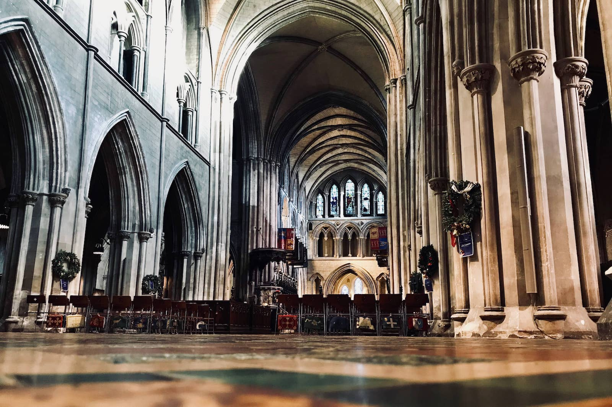 Inside St. Patrick’s Cathedral in Dublin
back to top
Get your family crest
This is a quick bonus at the St. Patrick’s Cathedral. The gift shop is actually quite nice and they have a section of all the family crests for the church’s members. People often ask me if I am Irish and I always say no, that I am more German and Danish. But here I found a crest for the Moore Family. This prompted me to fact-check my heritage and learn that indeed, I am a bit Irish. Opps. Well, I guess we learn something new every day!
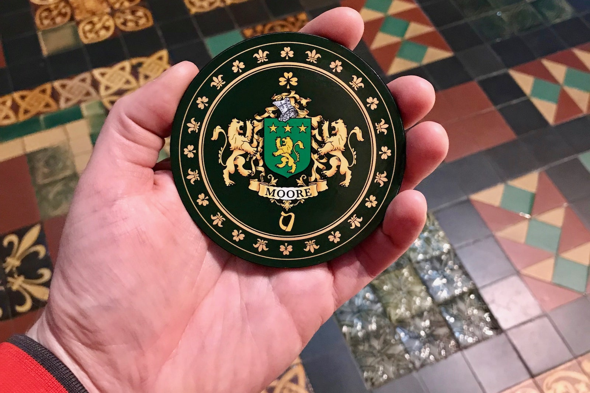 The Irish family crest for Moore
back to top
Guinness Storehouse
Yesterday we started hard with whiskey so today lets take it a bit easier and go for a “bit of the black stuff!” Guinness is every bit as important to the history, prominence, and development of Ireland as Jameson is. Here, at the Guinness Storehouse, you will experience a deeply immersive educational experience which is as much about the beer brewing process as it is about the history of Guinness and the impact this brewery had on Ireland’s industrial revolution.
The storehouse is 1-part self-guided tour, 1-part museum, and 1-part hands-on experimentation. You even get to try your hand at making a perfect pour of a pint of Guinness. If you are interested in visiting the Guinness Storehouse, be sure to read my comprehensive review of the Guinness Storehouse.
Similarly to the Jameson Distillery, I argue that a visit to the Guinness Storehouse is a must-do on this list of things to do in Dublin. If you can only do one or the other, then probably the Guinness Storehouse is the better experience, but both are very much worth visiting.
-
When to visit: Late afternoon
-
Time to Budget: 3-4 hours
-
Official Website: guinness-storehouse.com
-
Additional reading: Visiting the Guinness Storehouse
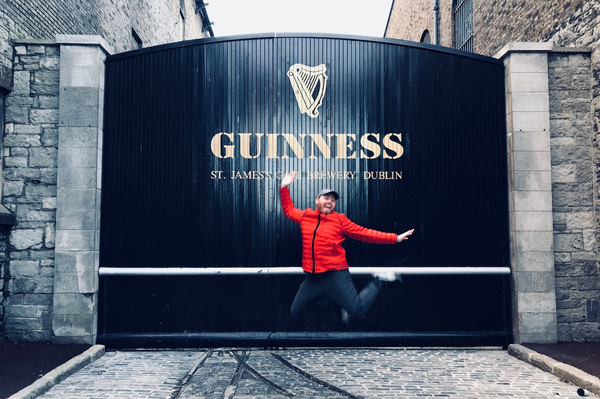 The gates of the Guinness Storehouse in Dublin
back to top
Temple Bar
Self-proclaimed as, “the friendliest watering hole in Dublin,” might be just about right, but for sure this is at least the most famous of all the bars in Dublin. So what better place to end our day? One of the best things about this bar is that they have live Irish music 7-days a week from 2:00 pm until closing time. I stopped in here a few times during my stay in Dublin and I was blown away each time by the amazing music being performed. There is no cover charge.
Temple Bar restaurant is also quite good and this is a great place to try a traditional dinner of oysters and Guinness! If you feel like trying some more whiskeys, Temple Bar has Ireland’s largest selection of whiskey (more on that next). So no matter what is on your list of things to do in Dublin tonight, you can find it all at Temple Bar.
-
When to visit: Evening
-
Time to Budget: 1+ hours
-
Official Website: thetemplebarpub.com
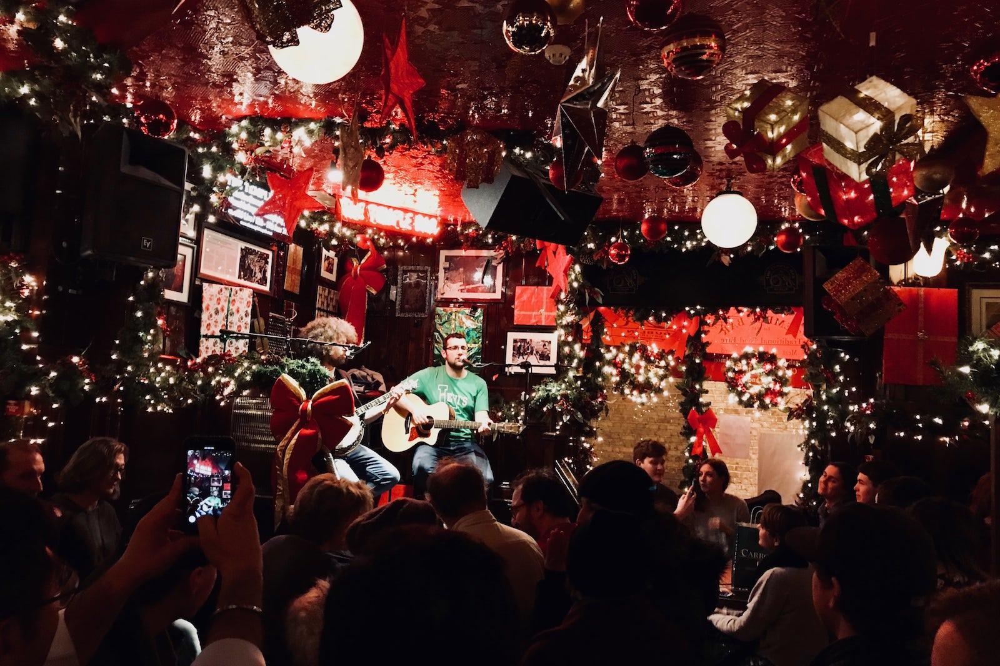 Live music at the Temple Bar in Dublin Ireland
back to top
Temple Bar Distillery Store and Taste Testing
Right next to Temple Bar is a small whiskey shop called the Temple Bar Distillery Store. They have a wide array of whiskeys on display and for sale. They have everything, ranging from Temple Bar whiskey which is made in-house, all the way up to the rarest hundred-plus-year-old whiskeys which cost more than $2500 a bottle. Their knowledgeable staff is super friendly and happy to give you a history tour around the room. I highly recommend this. They also have a whiskey tasting menu which I found to be quite comprehensive.
The best part, though, at least on my visit, is that there was a TV in the back of the room playing Nick Offerman’s ‘Yule Log’ for the whole evening. Clearly, these people are amazing.
-
When to visit: Evening
-
Time to Budget: 10 minutes - 1 hour
-
Official Website: thetemplebarpub.com
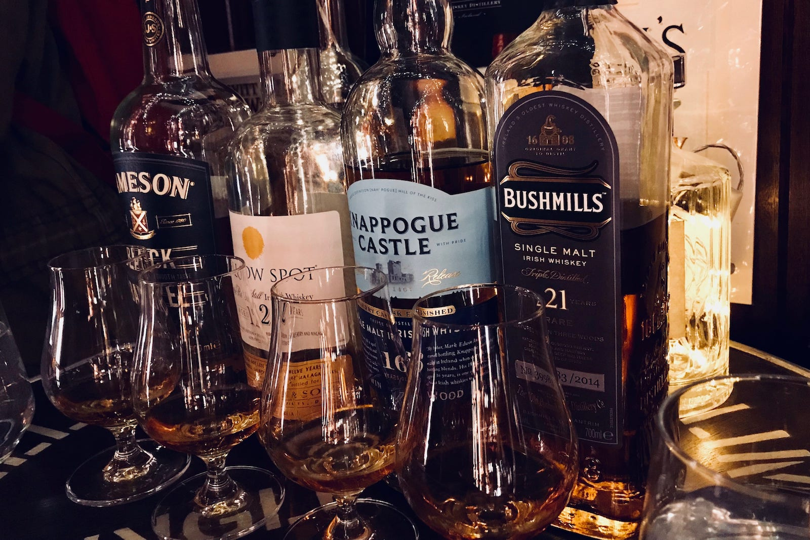 Whiskey Tasting at the Temple Bar Distillery Store
back to top
Day 3 – A hike along the coast
I hope you are not yet tired of walking because everything else has just been a warmup to get to today! As great as the last days’ activities have been, I think this day is the most rewarding. Be aware that good weather is necessary, so if you need to rearrange your schedule to accommodate this on day one or day two, go for it.
We will take the train to explore the Irish coastline and get our hiking boots a little dirty. At the end of the day, we will be well rewarded with some of the best fish and chips in all of Ireland.
One tip about today, if you will fly out of Dublin tonight, then you should take your luggage to the DART station. They have luggage storage there. Just be sure to pick up your luggage after hiking in Greystones while on your way to Howth. From Howth, it is much easier to go directly to the airport than it would be to go back to the city center and then to the airport.
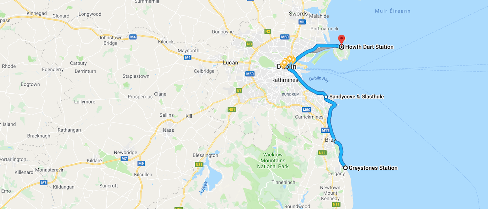 (https://goo.gl/maps/YDsvv4pj4922) Click on image to open interactive map on Google.” %}
DART train to Greystones + Cliff Walk
One of the best things to do in Dublin is to get out of Dublin! The DART is Dublin’s regional train for commuters. The main station in Dublin is Connolly Station, which has the best options for luggage storage and other services. The endpoints of the DART line following the coast are Greystones to the south and Howth to the north. You will need to buy a day pass for the train. As of this writing, it costs €12.00 per person.
Once you have your day pass and have stored any luggage you need to put away, hop on the next southbound train to Greystones. The ride lasts about an hour and the views are spectacular.
When you arrive at Greystones, head over toward the beach, and when you are ready, walk along the coast back toward the north (so that the water is to your right side). Within a few minutes, you will come to a path marked with a sign, “Cliff Walk / Bray.” Bray is the next town to the north and is your destination. If you don’t find this sign, no worries, just take the sidewalks and paths closest to the water until you get there. This cliff walk is really popular, so you can also look for the stream of people walking toward you.
The cliff walk is a well-maintained trail along the coast. The views and the fresh air are a great reprise from the city life. Just enjoy and go at your own pace! When you arrive at Bray, there are a number of coffee shops and takeaway cafes. Just don’t ruin your appetite, because in a few hours you will be eating the best fish and chips!
-
When to visit: Morning
-
Time to Budget: 3-4 hours
-
Official Website: irishrail.ie
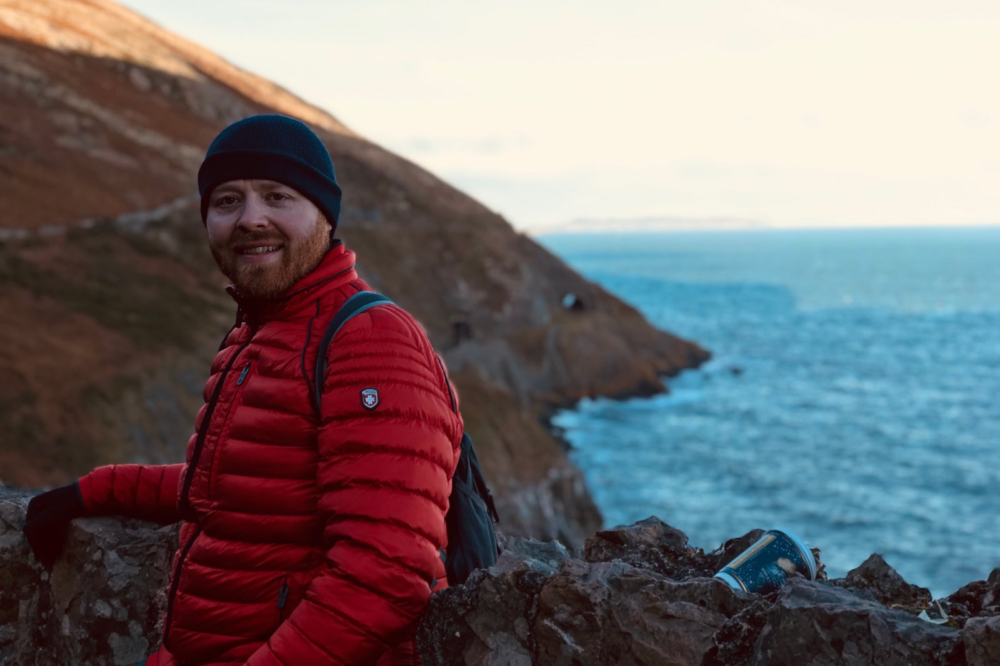 View from the Cliff Walks of Greystones
back to top
DART train to Howth for Fish and Chips
The train from Greystones to Howth takes about two hours. If you need to stop off in Dublin to pick up luggage you stored there, then expect to have to wait for a little for the next train to Howth.
Upon arrival in Howth, you have a few options. You can explore the peninsula which forms the northern border of the Bay of Dublin. The area is very walkable and there are a lot more hiking opportunities if time and daylight allow. Howth is a fishing community and so this is a really authentic place to get fish and chips.
Directly under the train station is a restaurant called The Bloody Stream. The atmosphere is cool, the location is very convenient, the prices are much more reasonable than some of the other nearby restaurants, and the fish and chips are the best I have ever had. While you wait for your food, read the history on the back of the menu to learn about why they are called The Bloody Stream. Hint: Vikings.
-
When to visit: Afternoon or evening
-
Time to Budget: 1-2 hours
-
Official Website: bloodystream.ie
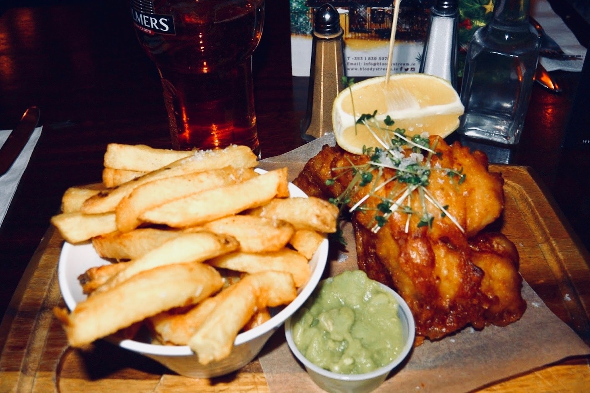 Fish and Chips at The Bloody Stream in the Howth Railway Station
back to top
Relax. Smile. You did it!
Mix and match a schedule that works for you and the weather you encounter. Of course, this list of things to do in Dublin is not fully comprehensive and it fully omits any mention of what will really make your trip to Dublin special: you! Just relax, have a good time, and live every moment to the fullest. That is the only thing you need to make sure that whatever you do in Dublin, it will be a trip to remember!
Have I missed any major attractions which you think should be on this list? Have you been to any of these sites? Please share your experience and provide any feedback, tips, or questions in the comments below. You may also reach me directly on Twitter at @judsonlmoore.